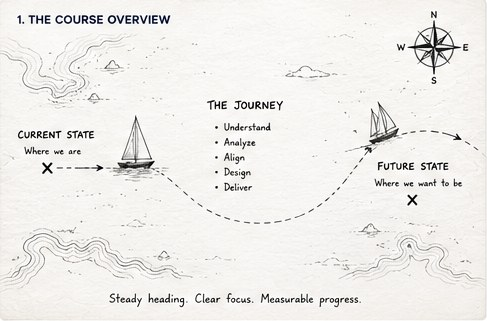
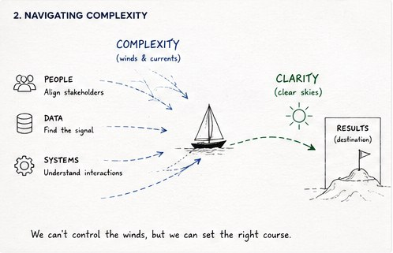
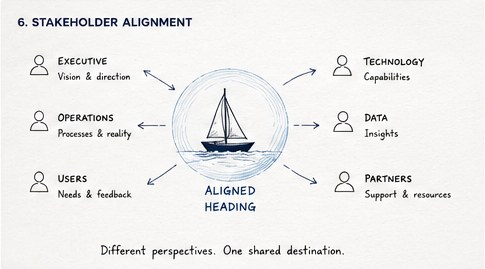
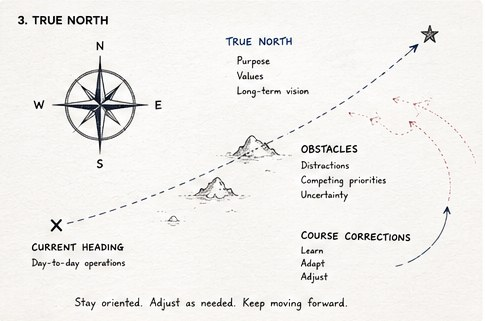
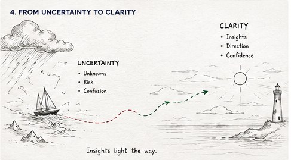
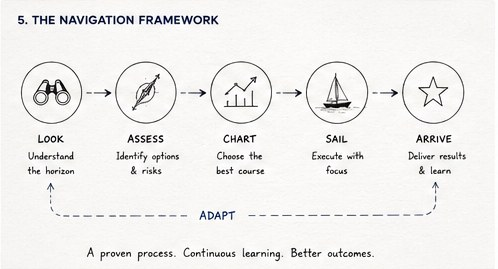
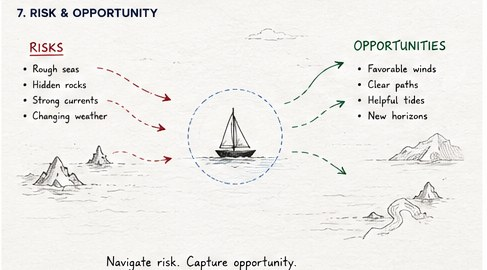
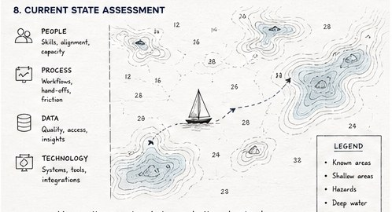
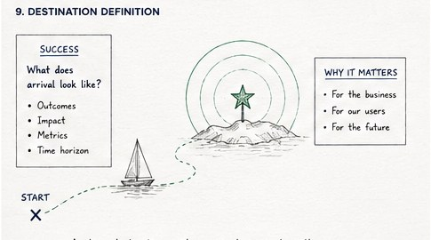

Product Strategy
Align business goals, customer needs, and product direction so teams can move from ambiguity to confident execution.
UX · AI · Product Consulting
Tack & Trim helps organizations chart a course through complex product, UX, and AI challenges with thoughtful strategy, user-centered design, and practical execution.
Tack & Trim is the independent consulting practice of Dan Finholt, a UX and product leader working across enterprise software, financial technology, payroll and HR platforms, and AI-assisted product design.
Services
Align business goals, customer needs, and product direction so teams can move from ambiguity to confident execution.
Clarify workflows, improve usability, guide design systems, and create software experiences that reduce friction.
Shape AI-enabled workflows, copilots, and human-in-the-loop experiences grounded in real user behavior.
Support product and design teams through critique, mentoring, collaboration practices, and clearer decision rituals.
Selected Experience
From treasury management and financial software to payroll, HR, and AI-enabled enterprise products, Tack & Trim is built for organizations that need more than surface-level polish.
How I Think
The navigation charts are not meant to be literal deliverables. They are visual shorthand for the way Tack & Trim approaches consulting work: understand the current position, align the crew, identify hazards, and make the next right adjustment.

Start with current state, destination, constraints, and the journey between them.

Separate the signal from the noise across people, data, systems, and decision paths.

Bring executives, users, technology, data, and operations around one shared heading.






About Dan
Dan Finholt is a UX leader, product strategist, and AI practitioner with more than 15 years of experience designing complex software systems.
His background combines architecture, enterprise software, financial technology, product management, and user experience design.
Outside of consulting, Dan is an offshore sailor with eleven Chicago Yacht Club Race to Mackinac finishes. The same principles that drive successful offshore racing—preparation, communication, adaptability, and disciplined execution—continue to influence his approach to product and organizational leadership.
Performance comes from thousands of thoughtful adjustments.
Approach
Great products emerge from thousands of small decisions made with clarity, discipline, and purpose. Whether designing software or navigating offshore, success depends on understanding conditions, communicating effectively, and making thoughtful adjustments along the way.
Let’s talk about where you are, what your team is trying to build, and how Tack & Trim can help.
Contact Dan